01
01HISTORY / RESEARCH DRAFT
Image credit ↗The rhino story
Uganda’s original rhinos and a new chapter.
Follow the rhino story ↗Look closer. Find a name.
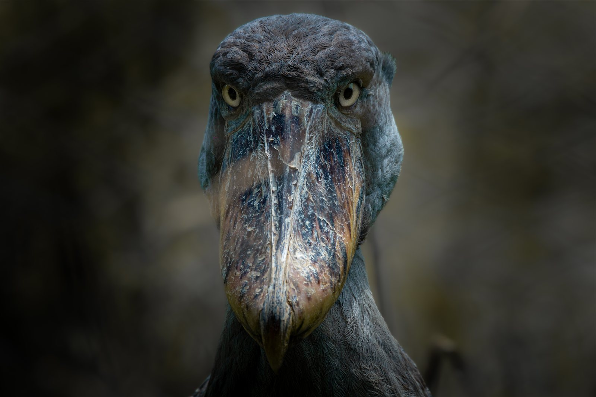
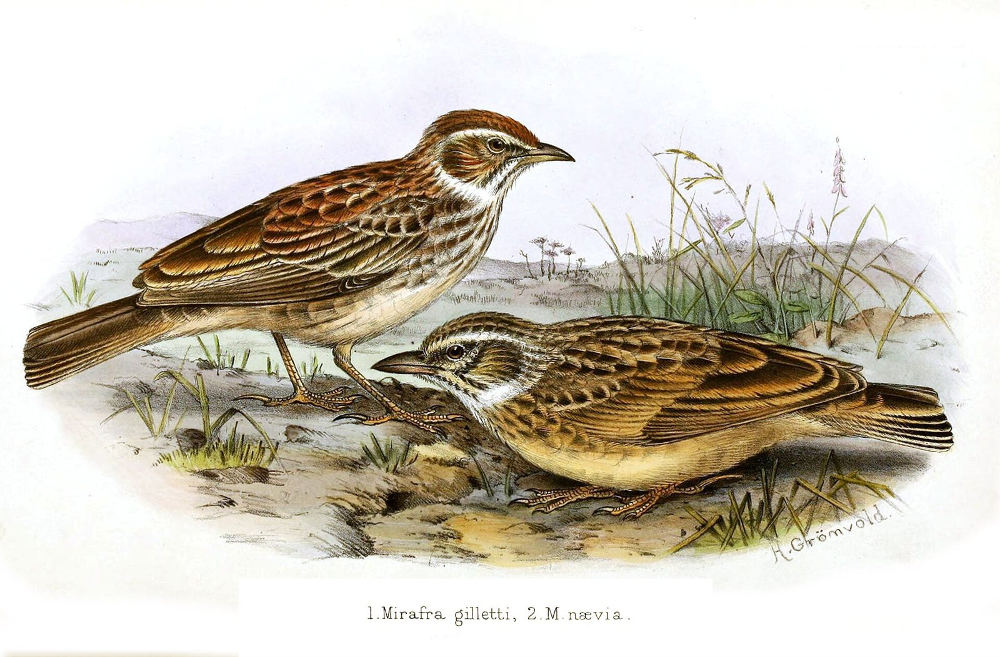
Start with what you see.
Expand a group, follow its classification, and choose an organism.
Try another common or scientific name, or reset the filters. This inventory is still growing; an absent entry does not mean the species is absent from Uganda.
Explore the growing inventory of Uganda’s species. Historical records and national checklists form this preliminary inventory. Species information continues to grow.
A flash of colour. A familiar call.
Which bird was it?
From the open grassland
to the forest canopy.
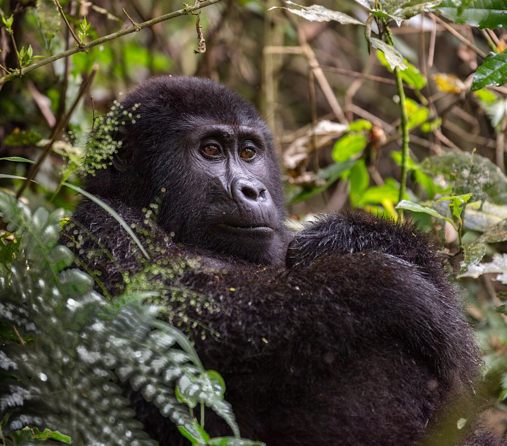
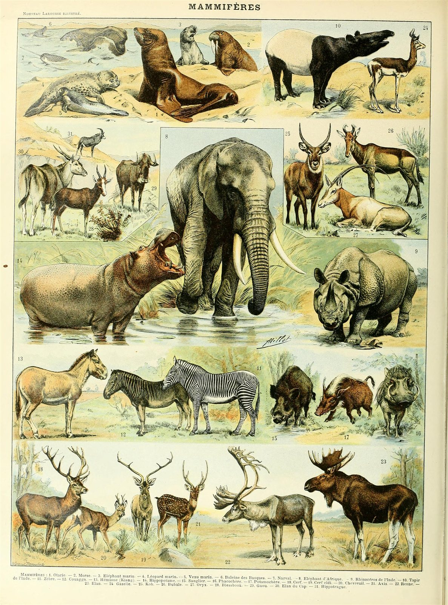
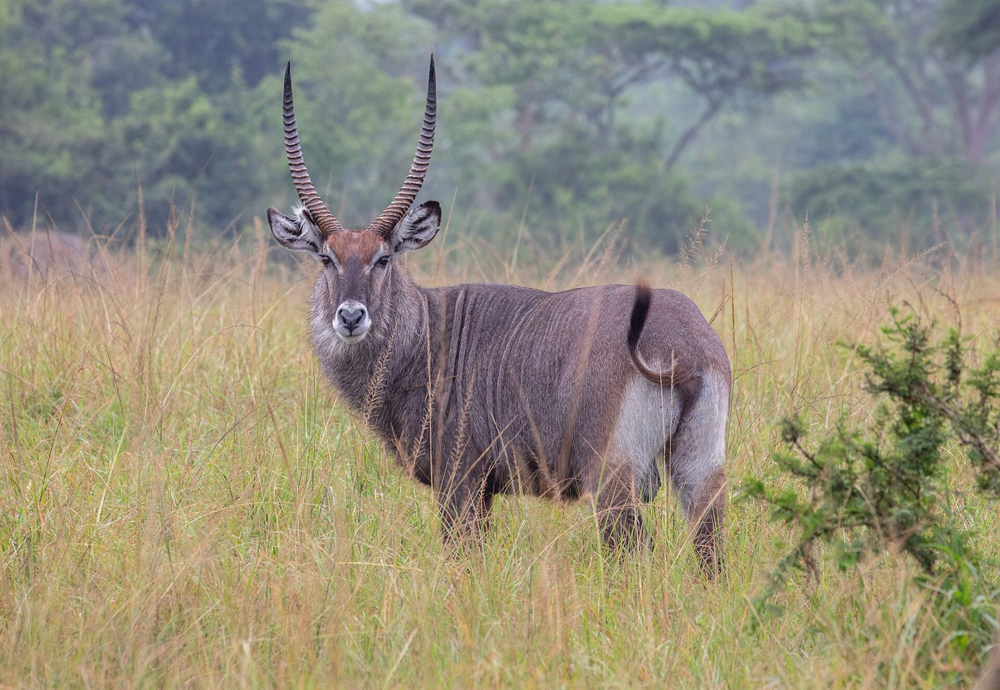
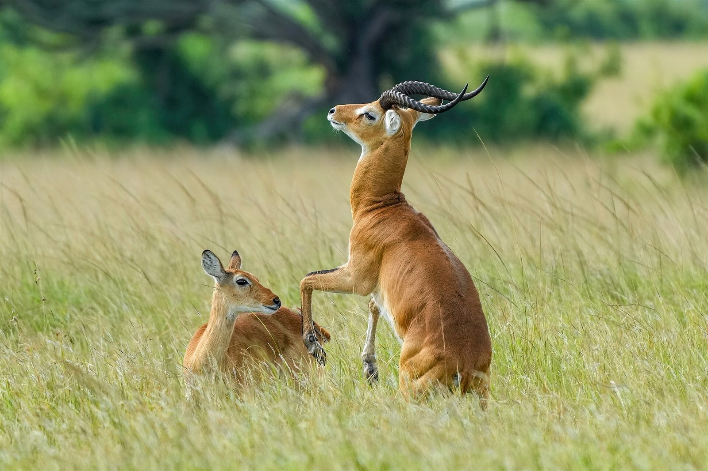
Begin with a leaf.
Discover a whole organism.
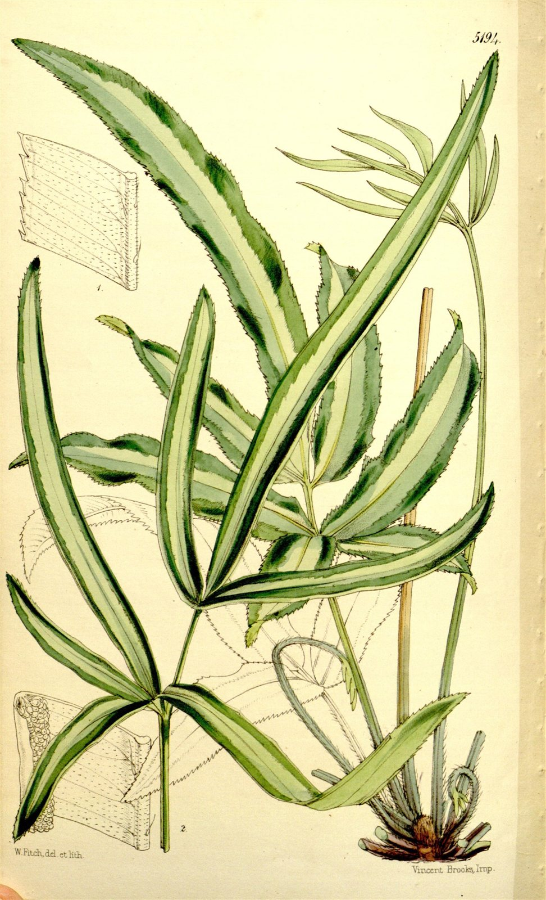
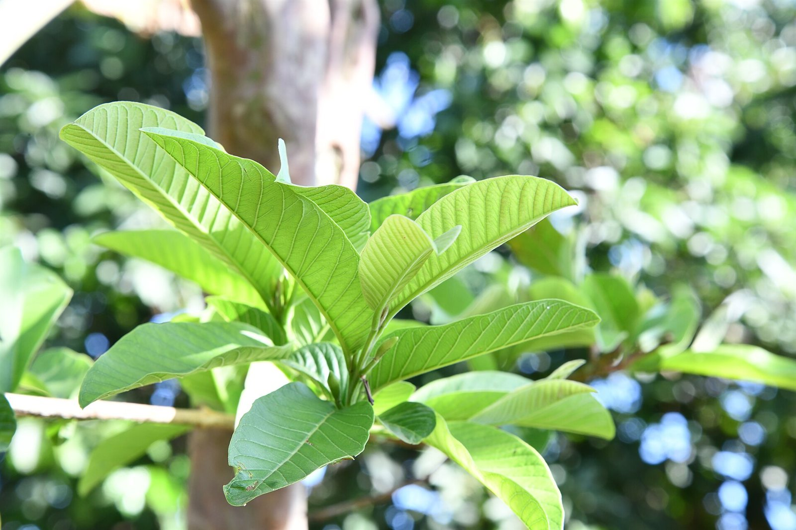
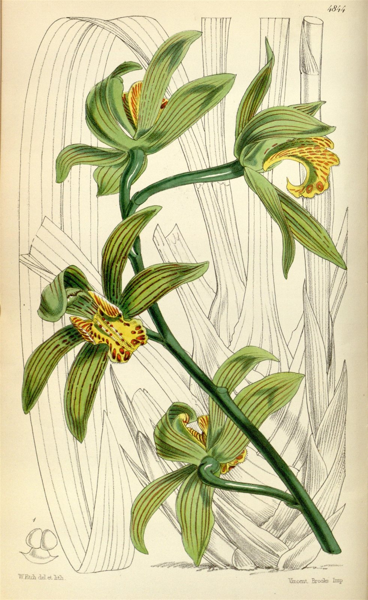
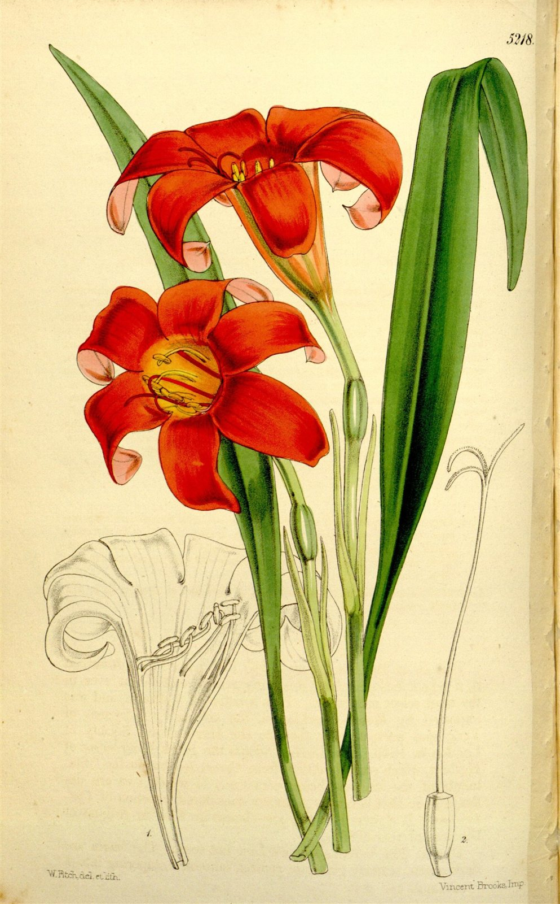
African botanical illustrations open a wider view of plant diversity.
Look into the grass.
Look along the fallen wood.

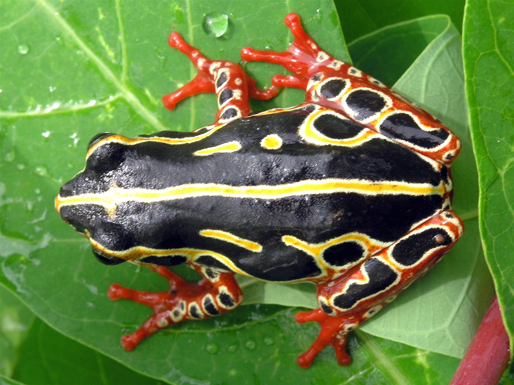
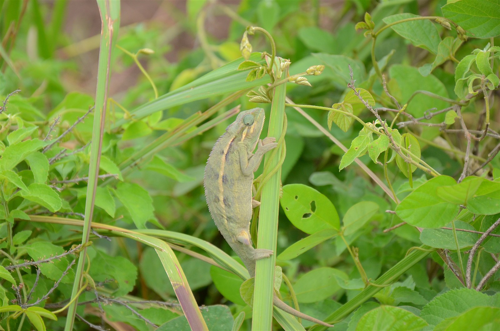
Choose a story.
Look closer at a life.
01Uganda’s original rhinos and a new chapter.
Follow the rhino story ↗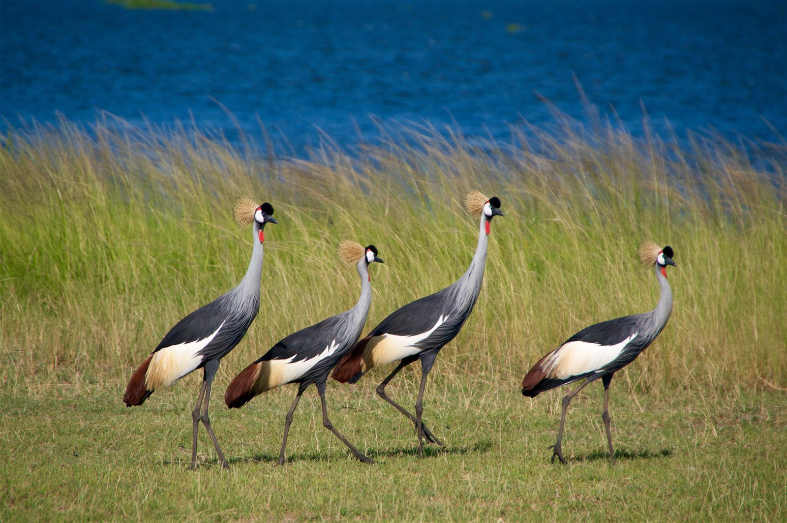
02Meet the bird behind the national symbol.
Account to comeRuspolia differens
Account to comeA closer look into the forest.
Account to comeUganda’s original rhinos disappeared. Southern white rhinos were later introduced. Follow the history.
Open the rhino story ↗Research draft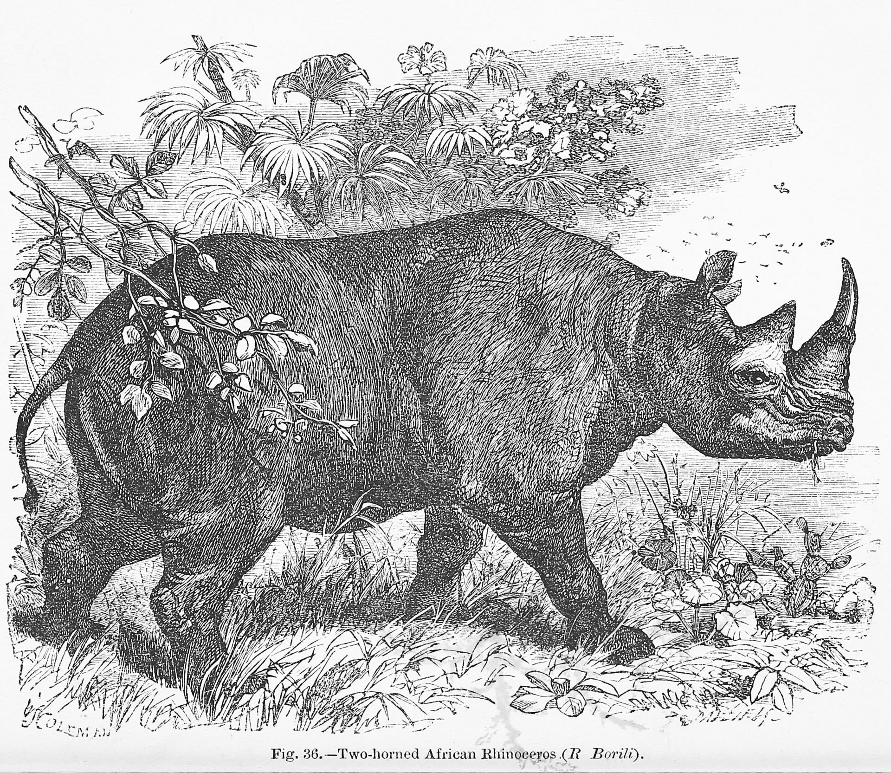
Meet Uganda’s original rhinos, trace their disappearance, and follow the animals introduced for a new beginning.
Read the history ↗